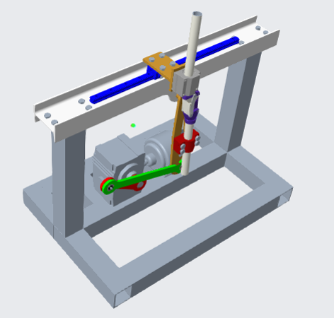
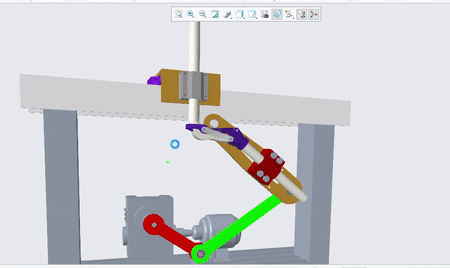

Cyclic Knee Testing Mechanism
Bachelors Thesis Project

Developed a compact single-actuated mechanism for prosthetic knee-life testing.
Various designs of polycentric knee mechanisms were studied to come up with a universal design that can accomodate the different mechanisms. The entire setup, along with the components were designed and modelled in PTC Creo; Kinematic and dynamic analyses was done in MATLAB using a Langrangian approach to choose the components like the motor, bearings and sensors.
